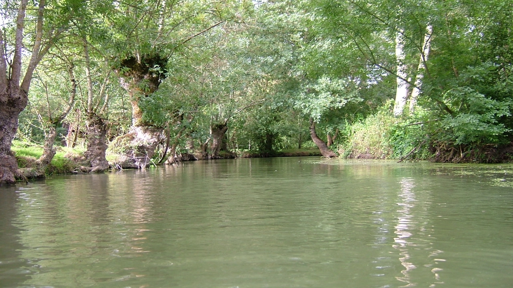

Ces icônes proviennent de svgrepo.
Icône de mécanicien
Icône de flèche
Icône de développeur
(icônes visibles uniquement sur des affichages de largeur supérieure à 479 pixels)
Ces photographies proviennent de Unsplash.
Photographie de Ricardo Gomez Angel.
Photographie de Kevin Canlas.
Cette photographie a été prise sur la Vieille Autize à Saint Sigismond par un batelier de l'embarcadère en 2004.
Toutes les balades de l'embarcadère de Saint Sigismond
passent à cet endroit.
